Data Understanding#
1. Import Library#
Pertama-tama yang dibutuhkan adalah beberapa library utama yaitu ada pandas yang digunakan untuk memanipulasi data, numpy untuk mengoperasi numerik, matplomatplotlib.pyplot & seaborn digunakan untuk visualisasi, dan scikit-learn biasanya adalah opsional, atau bisa digunakan untuk preprocessing & split data.
# Import library dasar
import pandas as pd
import numpy as np
import matplotlib.pyplot as plt
import seaborn as sns
from sklearn.preprocessing import LabelEncoder, StandardScaler
from sklearn.model_selection import train_test_split
# Load dataset
df = pd.read_csv("data-iris.csv")
print("\n--- Ukuran Data ---")
print("="*45)
print(f"Ukuran dataset: {df.shape[0]} baris, {df.shape[1]} kolom")
--- Ukuran Data ---
=============================================
Ukuran dataset: 150 baris, 6 kolom
print("\n--- Menampilkan 5 Baris Pertama ---")
print("="*70)
print(df.head())
--- Menampilkan 5 Baris Pertama ---
======================================================================
sepal.length sepal.width petal.length petal.width variety vnum
0 5.1 3.5 1.4 0.2 Setosa 0
1 4.9 3.0 1.4 0.2 Setosa 0
2 4.7 3.2 1.3 0.2 Setosa 0
3 4.6 3.1 1.5 0.2 Setosa 0
4 5.0 3.6 1.4 0.2 Setosa 0
2. Cek Struktur Data#
# tipe data
print("\n--- Tipe Data ---")
print("="*45)
print(df.info())
--- Tipe Data ---
=============================================
<class 'pandas.core.frame.DataFrame'>
RangeIndex: 150 entries, 0 to 149
Data columns (total 6 columns):
# Column Non-Null Count Dtype
--- ------ -------------- -----
0 sepal.length 150 non-null float64
1 sepal.width 150 non-null float64
2 petal.length 150 non-null float64
3 petal.width 150 non-null float64
4 variety 150 non-null object
5 vnum 150 non-null int64
dtypes: float64(4), int64(1), object(1)
memory usage: 7.2+ KB
None
# Statistik deskriptif
print("\n--- Statistik Deskriptif ---")
print("="*59)
print(df.describe())
--- Statistik Deskriptif ---
===========================================================
sepal.length sepal.width petal.length petal.width vnum
count 150.000000 150.000000 150.000000 150.000000 150.000000
mean 5.843333 3.057333 3.758000 1.199333 1.000000
std 0.828066 0.435866 1.765298 0.762238 0.819232
min 4.300000 2.000000 1.000000 0.100000 0.000000
25% 5.100000 2.800000 1.600000 0.300000 0.000000
50% 5.800000 3.000000 4.350000 1.300000 1.000000
75% 6.400000 3.300000 5.100000 1.800000 2.000000
max 7.900000 4.400000 6.900000 2.500000 2.000000
# Cek nilai unik di kolom target
print("\n--- Cek Nilai Unik Di Kolom Target ---")
print("="*45)
print(df['variety'].value_counts())
--- Cek Nilai Unik Di Kolom Target ---
=============================================
variety
Setosa 50
Versicolor 50
Virginica 50
Name: count, dtype: int64
3. Cek Missing Value & Duplikasi#
# Missing values
print("\n--- Missing Value ---")
print("="*45)
print(df.isnull().sum())
--- Missing Value ---
=============================================
sepal.length 0
sepal.width 0
petal.length 0
petal.width 0
variety 0
vnum 0
dtype: int64
# Duplikasi
print("\n--- Jumlah Duplikasi ---")
print("="*45)
print("Jumlah duplikasi:", df.duplicated().sum())
--- Jumlah Duplikasi ---
=============================================
Jumlah duplikasi: 1
4. Distribusi Fitur#
# Histogram untuk setiap fitur
df.hist(figsize=(10, 8), bins=15)
plt.suptitle("Distribusi Fitur Iris")
plt.show()
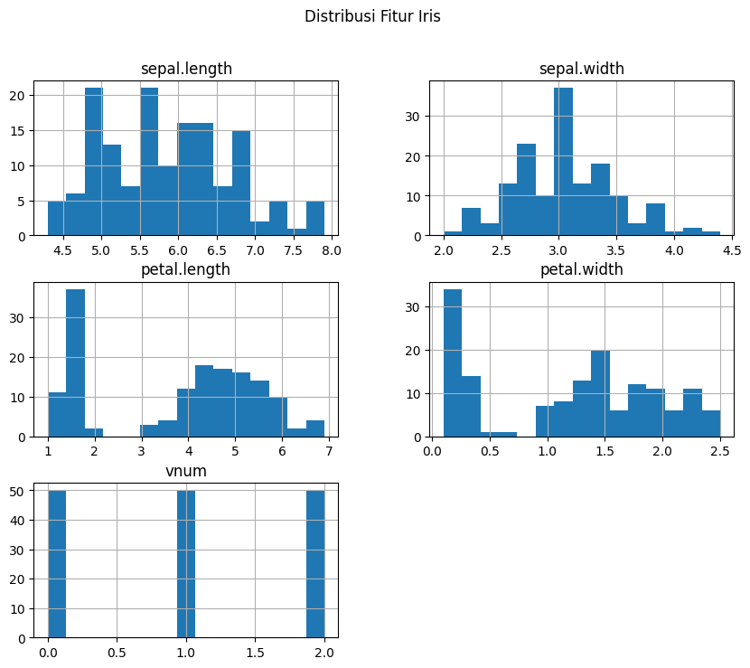
5. Boxplot Untuk Deteksi Outlier#
plt.figure(figsize=(10,6))
df.boxplot(column=['sepal.length','sepal.width','petal.length','petal.width'])
plt.title("Boxplot Fitur Iris")
plt.show()
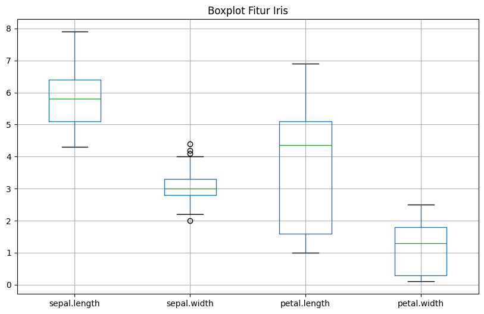
6. Korelasi Antar Fitur#
plt.figure(figsize=(8,6))
sns.heatmap(df.corr(numeric_only=True), annot=True, cmap="coolwarm")
plt.title("Korelasi antar fitur")
plt.show()
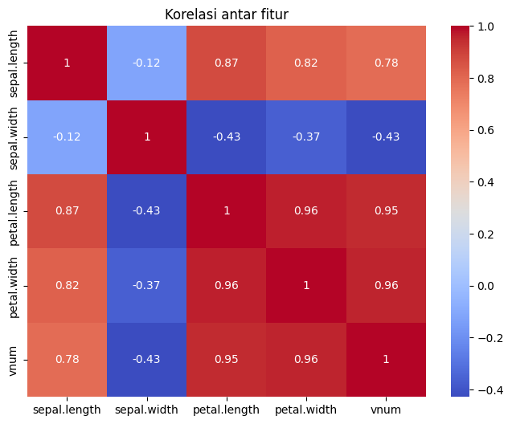
7. Visualisasi Penyebaran Data#
sns.pairplot(df, hue="variety", diag_kind="hist")
plt.suptitle("Scatter Matrix Iris", y=1.02)
plt.show()
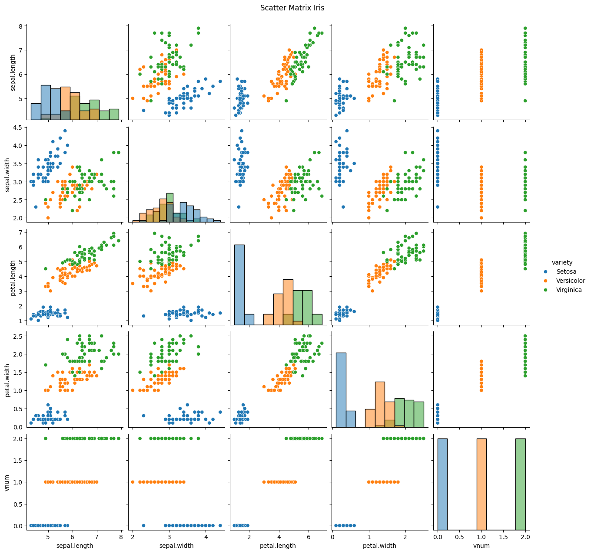
Eksplorasi Data - Iris Dataset#
Import Library & Dataset#
# Import library utama
import pandas as pd
import numpy as np
import matplotlib.pyplot as plt
import seaborn as sns
from sklearn.datasets import load_iris
import warnings
warnings.filterwarnings('ignore')
# Set style visualisasi
sns.set_style("whitegrid")
# Load dataset bawaan sklearn
iris = load_iris(as_frame=True)
df = iris.frame
df.rename(columns={
"sepal length (cm)": "sepal_length",
"sepal width (cm)": "sepal_width",
"petal length (cm)": "petal_length",
"petal width (cm)": "petal_width"
}, inplace=True)
df["variety"] = df["target"].map(dict(enumerate(iris.target_names)))
df.drop(columns="target", inplace=True)
print("Dataset berhasil dimuat:", df.shape)
df.head()
Dataset berhasil dimuat: (150, 5)
| sepal_length | sepal_width | petal_length | petal_width | variety | |
|---|---|---|---|---|---|
| 0 | 5.1 | 3.5 | 1.4 | 0.2 | setosa |
| 1 | 4.9 | 3.0 | 1.4 | 0.2 | setosa |
| 2 | 4.7 | 3.2 | 1.3 | 0.2 | setosa |
| 3 | 4.6 | 3.1 | 1.5 | 0.2 | setosa |
| 4 | 5.0 | 3.6 | 1.4 | 0.2 | setosa |
1. Statistik Umum#
print("\n--- Statistik Umum Dataset ---")
print("="*45)
print(df.describe(include="all"))
--- Statistik Umum Dataset ---
=============================================
sepal_length sepal_width petal_length petal_width variety
count 150.000000 150.000000 150.000000 150.000000 150
unique NaN NaN NaN NaN 3
top NaN NaN NaN NaN setosa
freq NaN NaN NaN NaN 50
mean 5.843333 3.057333 3.758000 1.199333 NaN
std 0.828066 0.435866 1.765298 0.762238 NaN
min 4.300000 2.000000 1.000000 0.100000 NaN
25% 5.100000 2.800000 1.600000 0.300000 NaN
50% 5.800000 3.000000 4.350000 1.300000 NaN
75% 6.400000 3.300000 5.100000 1.800000 NaN
max 7.900000 4.400000 6.900000 2.500000 NaN
2. Sebaran Data per Fitur#
fig, axes = plt.subplots(2, 2, figsize=(10,6))
for i, col in enumerate(df.select_dtypes("number").columns):
sns.histplot(df[col], kde=True, ax=axes[i//2, i%2], bins=15)
axes[i//2, i%2].set_title(f"Distribusi {col}")
plt.tight_layout()
plt.show()
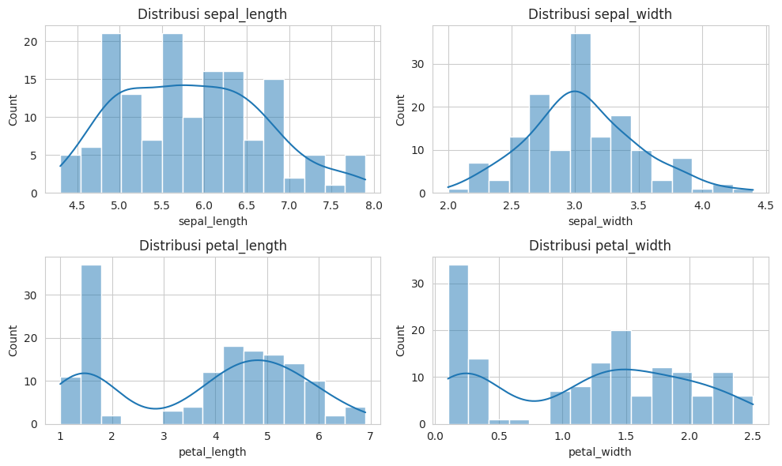
3. Rata-rata & Standar Deviasi per Kelas#
group_stats = df.groupby("variety").agg(["mean","std"]).round(2)
print("\n--- Statistik per variety (mean & std) ---")
print("="*45)
display(group_stats)
--- Statistik per variety (mean & std) ---
=============================================
| sepal_length | sepal_width | petal_length | petal_width | |||||
|---|---|---|---|---|---|---|---|---|
| mean | std | mean | std | mean | std | mean | std | |
| variety | ||||||||
| setosa | 5.01 | 0.35 | 3.43 | 0.38 | 1.46 | 0.17 | 0.25 | 0.11 |
| versicolor | 5.94 | 0.52 | 2.77 | 0.31 | 4.26 | 0.47 | 1.33 | 0.20 |
| virginica | 6.59 | 0.64 | 2.97 | 0.32 | 5.55 | 0.55 | 2.03 | 0.27 |
4. Visualisasi Boxplot per Kelas#
plt.figure(figsize=(10,6))
sns.boxplot(data=df, orient="h", palette="Set2")
plt.title("Boxplot Fitur Iris (Keseluruhan)")
plt.show()
# Per species
plt.figure(figsize=(12,6))
for i, col in enumerate(df.select_dtypes("number").columns):
plt.subplot(2,2,i+1)
sns.boxplot(x="variety", y=col, data=df, palette="Set2")
plt.title(f"Distribusi {col} per variety")
plt.tight_layout()
plt.show()
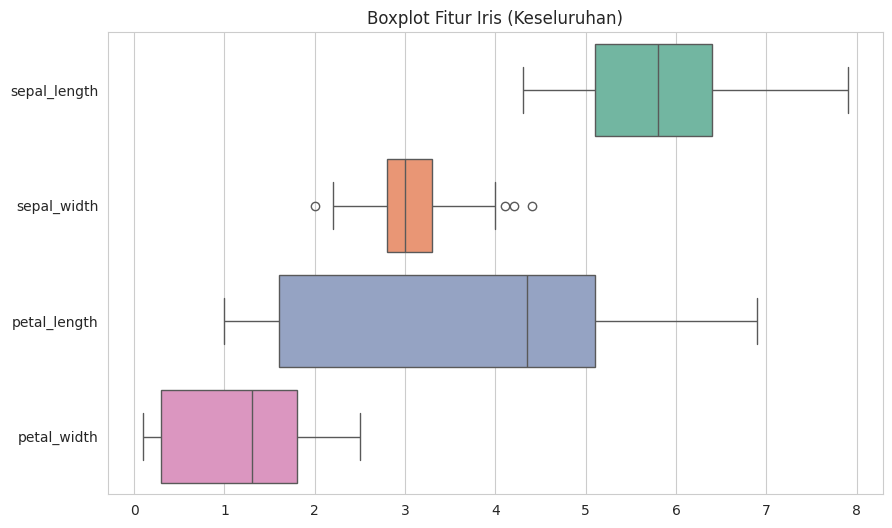
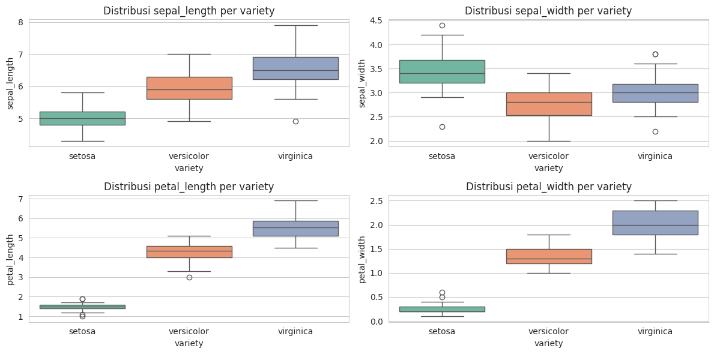
5. Scatter Plot per Kombinasi Fitur#
sns.pairplot(df, hue="variety", diag_kind="kde", corner=True, palette="husl")
plt.suptitle("Pairwise Scatter Plot Iris", y=1.02)
plt.show()
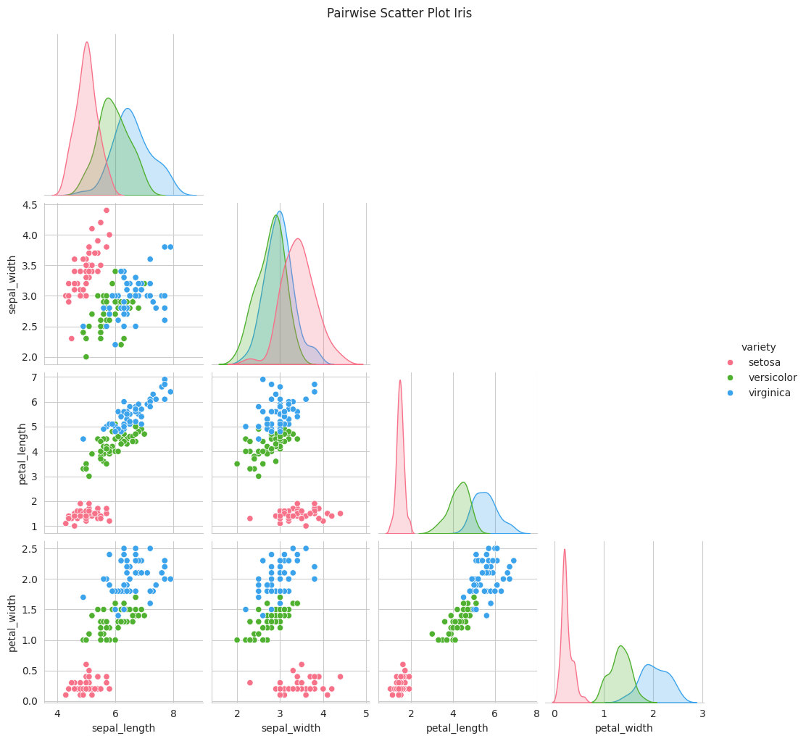
6. Korelasi antar Fitur#
from sklearn.preprocessing import LabelEncoder
df_encoded = df.copy()
df_encoded['variety'] = LabelEncoder().fit_transform(df['variety'])
sns.heatmap(df_encoded.corr(), annot=True, cmap="YlGnBu", fmt=".2f")
plt.title("Korelasi dengan Target")
plt.show()
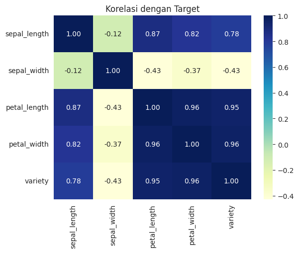
7. Komposisi Data per Species#
species_count = df["variety"].value_counts()
plt.figure(figsize=(5,5))
species_count.plot(kind="pie", autopct="%.1f%%", startangle=90, colors=sns.color_palette("Set3"))
plt.title("Proporsi Data per Variety")
plt.ylabel("")
plt.show()
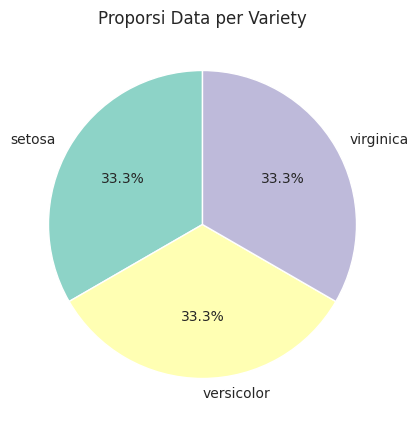
8. Ringkasan Eksplorasi#
from sklearn.preprocessing import LabelEncoder
df_encoded = df.copy()
df_encoded['variety'] = LabelEncoder().fit_transform(df['variety'])
corr = df_encoded.corr(numeric_only=True)
corr_unstacked = corr.unstack().sort_values(ascending=False)
top_corr = corr_unstacked[corr_unstacked < 1].drop_duplicates().head(3)
print("\n---Top 3 Korelasi (termasuk target variety):---")
print("="*45)
print(top_corr)
---Top 3 Korelasi (termasuk target variety):---
=============================================
petal_length petal_width 0.962865
petal_width variety 0.956547
variety petal_length 0.949035
dtype: float64
import numpy as np
print("RINGKASAN EKPLORASI DATA IRIS")
print("="*45)
print(f"Total sampel: {len(df)}")
print(f"Jumlah fitur numerik: {df.select_dtypes('number').shape[1]}")
print(f"Jumlah kelas: {df['variety'].nunique()}")
print(f"Nama kelas: {', '.join(df['variety'].unique())}")
print("\nDistribusi kelas (%):")
print("="*45)
print((df['variety'].value_counts(normalize=True)*100).round(1).astype(str) + "%")
print("\nTop 3 Korelasi Antar Fitur:")
print("="*45)
# Pilih hanya kolom numerik
corr = df.select_dtypes(include=[np.number]).corr()
corr_unstacked = corr.unstack().sort_values(ascending=False)
top_corr = corr_unstacked[corr_unstacked < 1].drop_duplicates().head(3)
print(top_corr)
# 🔹 Tambahan: Rentang nilai setiap fitur
print("\nRentang nilai setiap fitur:")
print("="*45)
num_cols = df.select_dtypes(include=[np.number]).columns
for col in num_cols:
col_min = df[col].min()
col_max = df[col].max()
print(f" {col}: {col_min:.2f} - {col_max:.2f} (rentang: {col_max - col_min:.2f})")
RINGKASAN EKPLORASI DATA IRIS
=============================================
Total sampel: 150
Jumlah fitur numerik: 4
Jumlah kelas: 3
Nama kelas: setosa, versicolor, virginica
Distribusi kelas (%):
=============================================
variety
setosa 33.3%
versicolor 33.3%
virginica 33.3%
Name: proportion, dtype: object
Top 3 Korelasi Antar Fitur:
=============================================
petal_length petal_width 0.962865
sepal_length petal_length 0.871754
petal_width 0.817941
dtype: float64
Rentang nilai setiap fitur:
=============================================
sepal_length: 4.30 - 7.90 (rentang: 3.60)
sepal_width: 2.00 - 4.40 (rentang: 2.40)
petal_length: 1.00 - 6.90 (rentang: 5.90)
petal_width: 0.10 - 2.50 (rentang: 2.40)
Tugas Power BI#
1. min max dari setiap kolom dan rata rata dari setiap kolom#
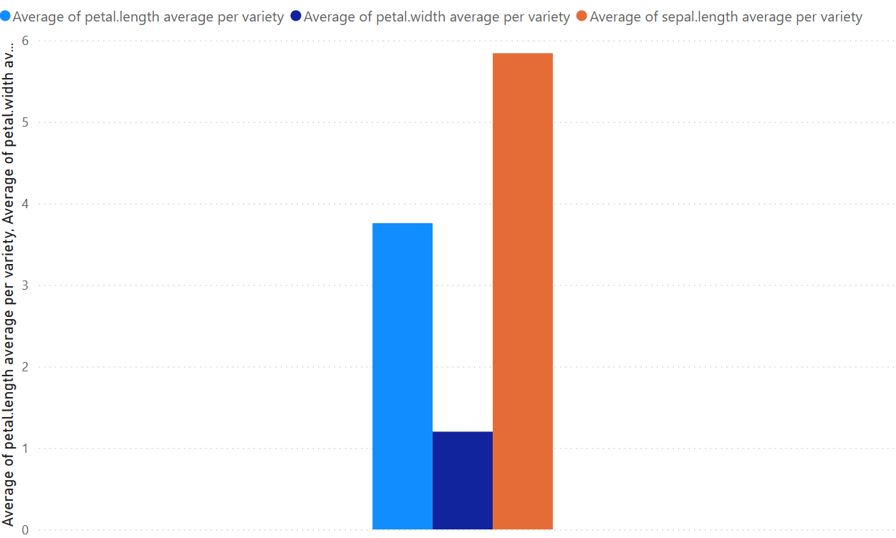
2. Sum Of Per Variety#
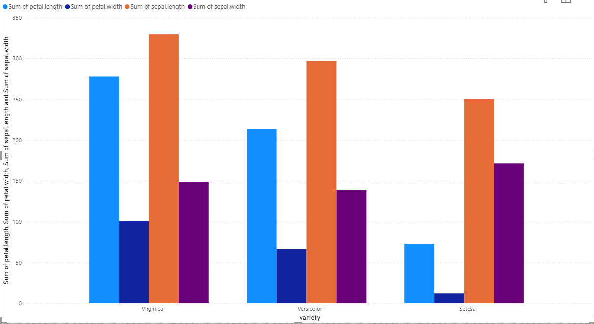
Tugas 2 Power BI#
1. Sum Of Per Variety#
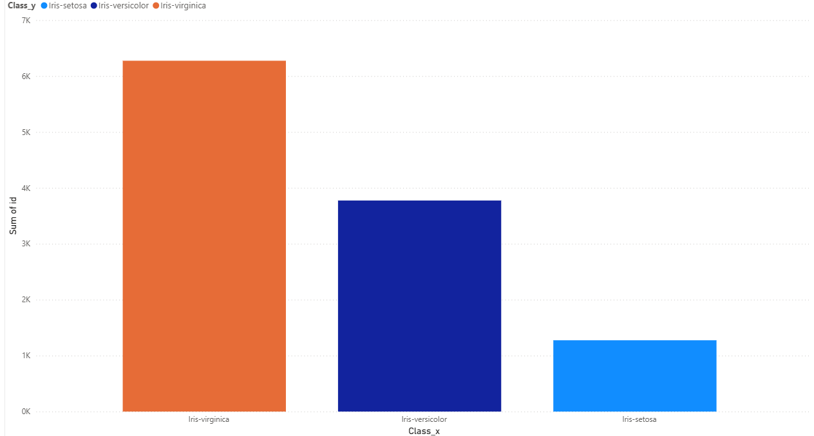
2. min max dari setiap kolom dan rata rata dari setiap kolom#
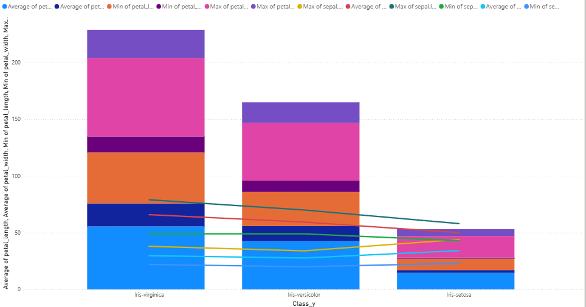